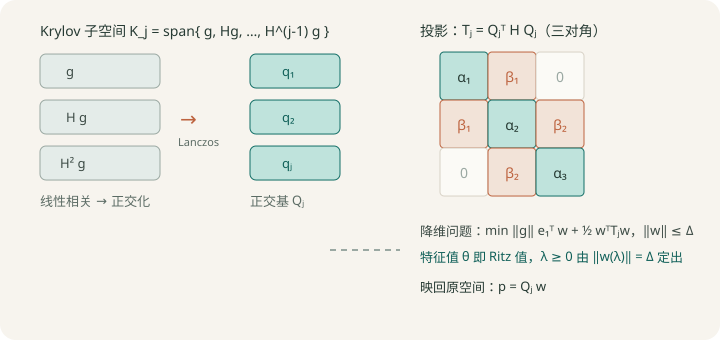

7.1.5 信赖域 Newton–Lanczos 方法：在 Krylov 子空间里求解子问题
Steihaug 的 Newton–CG 只给出子问题的近似解。当外层算法需要子问题被解到很高的精度时，可以把搜索限制在逐维增长的 Krylov 子空间里，用 Lanczos 过程得到三对角投影 Tⱼ，再在这个低维空间里用长期方程把子问题解得任意精确。
用 Krylov 子空间近似子问题
信赖域方法每步求解 m(p)=gₖᵀp+½pᵀHₖp 在 ‖p‖≤Δₖ 下的极小点。Steihaug 的 Newton–CG 只返回一个近似解（残差达标、触及边界或遇到负曲率就停）；当外层算法需要子问题被解到很高精度时（例如基于“几乎精确解”的收敛分析），需要更准的内层方法。
思路是把候选解限制在一个逐步扩大的子空间里。以当前梯度 g 为起点，定义第 j 维 Krylov 子空间：
关键事实：不带约束的牛顿解 −H⁻¹g 与带约束解的的形式 −(H+λI)⁻¹g 都落在 K_n 内（后者是 (H+λI)⁻¹ 作用在 g 上）。因此逐维增大 j、在 K_j 内极小化模型，就得到一串模型值单调下降且越来越接近真解的近似解。
Lanczos 与三对角投影
直接对 K_j 求正交基需要 O(j²) 存储。Lanczos 过程利用 H 的对称性，只用上一次的向量就能递推生成正交基。从 q₁=g/‖g‖ 出发，每一步：
把正交基按列拼成 Q_j=[q₁ … q_j]，则投影 T_j=Q_jᵀHQ_j 是三对角矩阵：
并且 HQ_j=Q_jT_j+β_j q_{j+1} e_jᵀ：残差只在最后一个方向上有分量。这既让每一步只需一次 Hessian–向量乘积与 O(n) 存储，也让三对角矩阵的特征值（Ritz 值）逐步逼近 H 的极端特征值。

降维子问题与长期方程
令 p=Q_j w，把模型限制到 K_j。因为 q₁=g/‖g‖ 且 Q_j 的列正交，有 Q_jᵀg=‖g‖e₁，子问题在 w 变量下变成一个小型的二次问题：
把 T_j 对角化 T_j=S diag(θ)Sᵀ，令 ŷ=Sᵀw、ĉ=‖g‖Sᵀe₁，则每个分量解耦。极小二乘点的形式为 ŷᵢ(λ)=−ĉᵢ/(θᵢ+λ)，其中 λ≥0。若 λ=0 时 ‖ŷ(0)‖≤Δ，则子问题解在内部；否则 λ 必须使边界恰好被达到，即满足长期方程：
左侧是 ‖ŷ(λ)‖²，关于 λ 单调递减，因此根唯一。用 Newton 法在 λ 上迭代即可求出它（导数 = −2∑ĉᵢ²/(θᵢ+λ)³）。求出 ŷ 后回代 w=Sŷ，再令 p=Q_j w。当 j 增大时 Ritz 值 θ 越来越接近 H 的谱，p 也越来越接近真解；j=n 时得到子问题的（数值上）精确解。
三维可复现算例
取 H=[[4,1,0],[1,3,1],[0,1,2]]、g=(1,1,1)、Δ=0.3。此时无约束解 −H⁻¹g≈(−0.2222,−0.1111,−0.4444) 的范数约 0.509>0.3，约束起作用，λ>0。逐维增大 Krylov 子空间：
（1）j=1：Ritz 值 4.3333，λ≈1.4402，p≈(−0.1732,−0.1732,−0.1732)，‖p‖=0.3，模型下降≈0.3246。
（2）j=2：Ritz 值 4.6861、1.8139，λ≈1.8221，p≈(−0.1404,−0.1404,−0.2249)，‖p‖=0.3，模型下降≈0.3348。
（3）j=3：K₃ 已是全空间，Ritz 值 4.7321、3.0000、1.2679 恰为 H 的特征值；λ≈1.8493，p≈(−0.1489,−0.1288,−0.2263)，‖p‖=0.3，模型下降≈0.3353（已达真解）。
把 Δ 放大到 10（约束失效）时，j=3 返回无约束解 (−0.2222,−0.1111,−0.4444)，残差 ‖Hp+g‖≈4.6×10⁻¹⁶。可见模型下降随 j 单调上升，且在 j=n 时子问题被（数值上）精确求解。
以上均为教学示意，用来展示 Krylov 子空间的逐步逼近，不代表任何大规模问题的迭代次数或性能。
交互：子空间维数与半径如何决定解
固定 H=[[4,1,0],[1,3,1],[0,1,2]]、g=(1,1,1)，用滑块调节 Krylov 维数 j 与信赖域半径 Δ。面板实时报告乘子 λ、Ritz 值、返回步 p、其范数与模型下降。
实时降维子问题检查
调大 j：Ritz 值更多、λ 与 p 收敛到子问题真解。调大 Δ：当无约束解的范数小于 Δ 时 λ 降为 0，返回内部点；否则 ‖p‖=Δ。
Python：Lanczos 与降维求解
下面的程序只依赖标准库。它实现 Lanczos 正交化、小型对称矩阵的 Jacobi 特征分解、长期方程的 Newton 根搜索，并在三维算例上重现上面的结果。用断言核对 ‖p‖=Δ（约束起作用时）、模型下降随 j 递增、以及 j=3 大半径时残差近零。
"""Trust-region Newton-Lanczos: solve the subproblem in a growing Krylov subspace."""
from math import sqrt
def matvec(A, v):
return [sum(A[i][j] * v[j] for j in range(len(v))) for i in range(len(A))]
def dot(u, v):
return sum(a * b for a, b in zip(u, v))
def norm(v):
return sqrt(dot(v, v))
def lanczos(H, g, j):
"""Return orthonormal Krylov basis Q, diagonal alpha and off-diagonal beta."""
qs, alphas, betas = [], [], []
q = [x / norm(g) for x in g]
q_prev, beta_prev = [0.0] * len(g), 0.0
for _ in range(j):
qs.append(list(q))
z = matvec(H, q)
alpha = dot(q, z)
alphas.append(alpha)
for i in range(len(g)):
z[i] -= alpha * q[i] + beta_prev * q_prev[i]
beta = norm(z)
betas.append(beta)
q_prev, q, beta_prev = list(q), [x / beta for x in z], beta
return qs, alphas, betas
def jacobi(A, sweeps=100):
"""Eigenvalues theta and eigenvectors V (columns) of a small symmetric matrix."""
n = len(A)
a = [row[:] for row in A]
V = [[1.0 if i == j else 0.0 for j in range(n)] for i in range(n)]
for _ in range(sweeps):
p, q, mx = 0, 1, 0.0
for i in range(n):
for j in range(i + 1, n):
if abs(a[i][j]) > mx:
mx, p, q = abs(a[i][j]), i, j
if mx < 1e-15:
break
theta = 0.5 * (a[q][q] - a[p][p]) / a[p][q]
t = (1.0 if theta >= 0 else -1.0) / (abs(theta) + sqrt(theta * theta + 1.0))
c, s = 1.0 / sqrt(1.0 + t * t), t / sqrt(1.0 + t * t)
for k in range(n):
akp, akq = a[k][p], a[k][q]
a[k][p], a[k][q] = c * akp - s * akq, s * akp + c * akq
for k in range(n):
apk, aqk = a[p][k], a[q][k]
a[p][k], a[q][k] = c * apk - s * aqk, s * apk + c * aqk
for k in range(n):
vkp, vkq = V[k][p], V[k][q]
V[k][p], V[k][q] = c * vkp - s * vkq, s * vkp + c * vkq
return [a[i][i] for i in range(n)], V
def solve_reduced(theta, V, gnorm, Delta):
"""Minimize gnorm*e1.w + 0.5 w.T.w with ||w|| <= Delta, returning (w, lambda)."""
n = len(theta)
c = [gnorm * V[0][i] for i in range(n)]
sq = lambda lam: sum(c[i] * c[i] / (theta[i] + lam) ** 2 for i in range(n))
lam = 0.0
if sq(0.0) > Delta * Delta:
lam = max(0.0, -min(theta)) + 1e-9
for _ in range(100):
f = sq(lam) - Delta * Delta
df = -2.0 * sum(c[i] * c[i] / (theta[i] + lam) ** 3 for i in range(n))
new = lam - f / df
floor = max(0.0, -min(theta))
new = 0.5 * (lam + floor) if new <= floor else new
if abs(new - lam) < 1e-15:
lam = new
break
lam = new
y = [-c[i] / (theta[i] + lam) for i in range(n)]
w = [sum(V[i][k] * y[k] for k in range(n)) for i in range(n)]
return w, lam
def tr_lanczos(H, g, Delta, j):
"""Approximate solution of the trust-region subproblem in a j-dim Krylov subspace."""
Q, alpha, beta = lanczos(H, g, j)
T = [[0.0] * j for _ in range(j)]
for i in range(j):
T[i][i] = alpha[i]
if i + 1 < j:
T[i][i + 1] = T[i + 1][i] = beta[i]
theta, V = jacobi(T)
w, lam = solve_reduced(theta, V, norm(g), Delta)
p = [sum(Q[k][i] * w[k] for k in range(j)) for i in range(len(g))]
return p, lam, theta
def model_decrease(H, g, p):
return -(dot(g, p) + 0.5 * dot(p, matvec(H, p)))
def main():
H = [[4.0, 1.0, 0.0], [1.0, 3.0, 1.0], [0.0, 1.0, 2.0]]
g = [1.0, 1.0, 1.0]
decs = []
for j in (1, 2, 3):
p, lam, theta = tr_lanczos(H, g, 0.3, j)
assert abs(norm(p) - 0.3) < 1e-9 and dot(g, p) < 0.0 and lam > 0.0
decs.append(model_decrease(H, g, p))
print("j=%d" % j, "lambda=%.6f" % lam, "Ritz=", [round(t, 4) for t in theta],
"p=", tuple(round(x, 4) for x in p), "||p||=%.4f" % norm(p),
"dec=%.4f" % model_decrease(H, g, p))
assert decs[0] < decs[1] < decs[2]
p3, lam3, _ = tr_lanczos(H, g, 10.0, 3)
resid = matvec(H, p3)
resid = [resid[i] + g[i] for i in range(3)]
assert norm(resid) < 1e-10 and abs(lam3) < 1e-12
print("full step (Delta=10):", tuple(round(x, 4) for x in p3), "residual=%.2e" % norm(resid))
if __name__ == "__main__":
main()程序只处理固定的三维教学矩阵，用来验证投影与长期方程的求解；它不是完整信赖域求解器，不含半径更新、实际/预测下降比、Lanczos 中断（breakdown）处理与重启，也不处理 j 接近 n 时的正交性丢失。
这一页的边界
本文只描述 Krylov 子空间投影与降维子问题的精确求解。它不讨论何时停止扩充 j（提前终止准则）、Lanczos 向量失去正交性时的重正交、数值中断的处理，也不给出该方法与 Steihaug 的收敛速度对比。三对角矩阵的特征分解与实际实现中“重启动 + 继续”的策略密切相关；本页用 Jacobi 直接分解小矩阵，只是一个教学工具。j 增大时模型下降单调上升，但存储与 Hessian–向量乘积次数也随之增长；把这个例子当成大规模性能证据是过度解读。